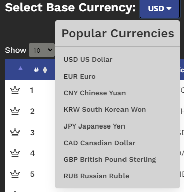

How Crypto Arbitrage Works
As an application, Crypto Arbitrage is designed to show you if there are trading opportunities for a certain cryptocurrency resulting from discrepancies in exchange rates of national (fiat) currencies. This
is best explained through example.
To use the application: you first select a base fiat currency as indicated in the screenshot below:

This will be the basis for comparison and used to discover potential arbitrage opportunities. Let's take a look at the table itself.

In the table, you are presented with the top 50 cryptocurrencies ranked in descending order by market capitalization. Market capitalization is arrived at by taking the Total number of coins outsanding multiplied by the current market price of the coin.
Typically, a higher market capitalization indicates a higher popularity of that coin. This is why you are likely already familiar with the top two coins in the list – Bitcoin and Ethereum.
Note: We are only able to show you the top 50 cryptocurrencies by market cap due to limitations of our chosen API.
The first three columns display the coin's identifying information (rank, image, name, and symbol). The fourth column shows you the price of that coin in your selected base currency.
Where things start to get interesting, and, where the bulk of Crypto Arbitrage's use is illustrated, is in columns five through eight. These columns tell us our potential arbitrage opportunity
if we were to buy the coin in that column's currency then convert it back to our selected base currency.
For example, let's look at column five (Price/EUR/Base) for Bitcoin in the image above. What the $11.33524 figure is telling us is this: If we were to buy a Bitcoin in Euros and then sell that Bitcoin for US Dollars
we would stand to make an extra $11.33524 per Bitcoin purchased and sold.
Similarily, if we look at column six (Price/GBP/Base), this tells us that if we were to buy a Bitcoin in British Pounds and sell it for US Dollars, we would make an additional
$32.03135. If you skip to column eight (Price/KRW/Base), you would see that buying a Bitcoin in Korean Won is less advantageous to us. If we were to do so and then sell the Bitcoin for US Dollars, we would actually walk away with
$54.99948 less.
Regardless of the base fiat currency you select, the desired results remain the same. A positive number is good and presents a potential arbitrage opportunity. A negative number is bad and does not indicate a potential arbitrage opportunity.
Finally, the calculation for columns five through eight is, for example:
If: 1 Bitcoin = €50,000 (EUR) and 1 Bitcoin = $55,000 (USD). The USD to EUR exchange rate is 0.8.
Then: €50,000 (EUR) divided by the exchange rate of 0.8 = $62,500 (USD). Thus, our arbitrage opportunity is equal to
$62,500 (Euros converted to US Dollars price) minus $55,000 (price of 1 Bitcoin in US Dollars) = $7,500 per Bitcoin traded.